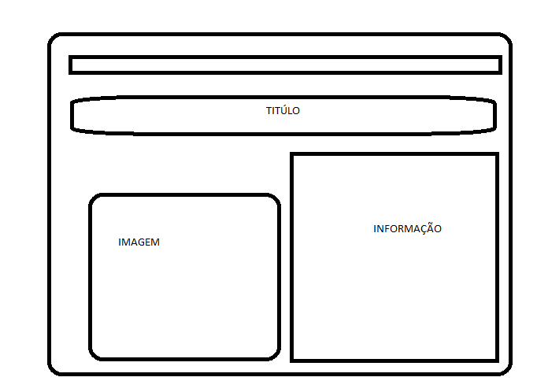
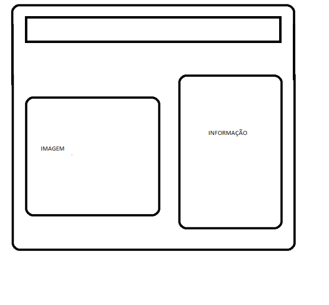
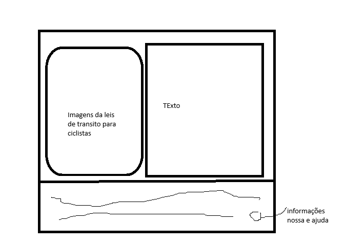

Projeto Integrador - Os Ciclistas e a Legislação de Trânsito
Turma:
IIW2025A
Grupo:
Luiz Gustavo Castro Neves
Lucas Ferreira dos Santos
Kayo Malmsteen Gabriel Ferreira Motta
1. Planejamento
Tema do Site
Como os ciclistas devem se comportar perante a leis de transito
Público-Alvo
ciclistas e quem quiser saber as leis de transito dos ciclistas
Estrutura do site
A nossa estrutura iremos falar sobre bicicleta no transito e como o codigo de transito proibe em relação aos ciclistas, pedestres e motoristas
Como vai ser a estrutura do nosso site
Nosso site sobre Educação no Trânsito para Ciclistas será organizado em 2 seções principais:
Seção 1: Legislação
Os Ciclistas e a Legislação de Trânsito
Ameaçar ciclistas com carro: É infração gravíssima e além da multa, o motorista pode perder o direito de dirigir e ter seu carro retido
Ciclistas em sentido contrário ao fluxo da via: Quando não houver ciclovia, ciclofaixa ou acostamento, o lugar do ciclista é na via, no mesmo sentido do fluxo de carros
"Fechar" o ciclistas: Durante a manobra de mudança de direção, o condutor deverá ceder passagem aos pedestres e ciclistas
Seção 2: Prevenção de Acidentes
Pedestres caminhando na ciclovia: Ciclovia E uma pista própria destinada à circulação de ciclos, separado fisicamente do tráfego comum
Andar de bicicleta na calçada: Calçada é para pedestres, bicicletas só circulam em casos excepcionais e com autorização
Colar na traseira do ciclista: Deixar de respeitar as distâncias laterais e frontais é infração grave!
Por Que Essa Estrutura?
Essa organização permite:
Abordar o tema de forma progressiva (para garantir a segurança e a de outros usuários da via)
Abordar as leis de trânsito para ciclistas(definem os direitos e deveres dos ciclistas)
Integrar os eixos (contribuem para uma convivência mais harmoniosa no trânsito)
2. Wireframes
Inclua aqui os wireframes do seu site como figuras,
como nos exemplos abaixo.
Você pode aprender mais sobre os wireframes na internet ou
por meio desta página,
criada com o auxílio do Deep Seek.

Wireframe - Página Inicial

Wireframe - Os Cicilistas e a Legislação de Trânsito

Wireframe - Página final